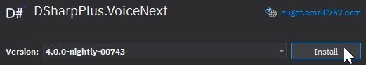

Transmitting with VoiceNext
Enable VoiceNext
Install the DSharpPlus.VoiceNext package from NuGet.

Then use the @DSharpPlus.VoiceNext.DiscordClientExtensions.UseVoiceNext* extension method on your instance of @DSharpPlus.DiscordClient.
var discord = new DiscordClient();
discord.UseVoiceNext();
Connect
Joining a voice channel is very easy; simply use the @DSharpPlus.VoiceNext.DiscordClientExtensions.ConnectAsync* extension method on @DSharpPlus.Entities.DiscordChannel.
DiscordChannel channel;
VoiceNextConnection connection = await channel.ConnectAsync();
Transmit
Discord requires that we send Opus encoded stereo PCM audio data at a sample rate of 48kHz.
You'll need to convert your audio source to PCM S16LE using your preferred program for media conversion, then read that
data into a Stream object or an array of byte to be used with VoiceNext. Opus encoding of the PCM data will be done
automatically by VoiceNext before sending it to Discord.
This example will use ffmpeg to convert an MP3 file to a PCM stream.
var filePath = "funiculi_funicula.mp3";
var ffmpeg = Process.Start(new ProcessStartInfo
{
FileName = "ffmpeg",
Arguments = $@"-i ""{filePath}"" -ac 2 -f s16le -ar 48000 pipe:1",
RedirectStandardOutput = true,
UseShellExecute = false
});
Stream pcm = ffmpeg.StandardOutput.BaseStream;
Now that our audio is the correct format, we'll need to get a transmit sink for the channel we're connected to. You can think of the transmit stream as our direct interface with a voice channel; any data written to one will be processed by VoiceNext, queued, and sent to Discord which will then be output to the connected voice channel.
VoiceTransmitSink transmit = connection.GetTransmitSink();
Once we have a transmit sink, we can 'play' our audio by copying our PCM data to the transmit sink buffer.
await pcm.CopyToAsync(transmit);
Stream#CopyToAsync() will copy PCM data from the input stream to the output sink, up to the sink's configured
capacity, at which point it will wait until it can copy more. This means that the call will hold the task's execution,
until such time that the entire input stream has been consumed, and enqueued in the sink.
This operation cannot be cancelled. If you'd like to have finer control of the playback, you should instead consider
using Stream#ReadAsync() and VoiceTransmitSink#WriteAsync() to manually copy small portions of PCM data to the
transmit sink.
Disconnect
Similar to joining, leaving a voice channel is rather straightforward.
var vnext = discord.GetVoiceNext();
var connection = vnext.GetConnection();
connection.Disconnect();
Example Commands
[Command("join")]
public async Task JoinCommand(CommandContext ctx, DiscordChannel channel = null)
{
channel ??= ctx.Member.VoiceState?.Channel;
await channel.ConnectAsync();
}
[Command("play")]
public async Task PlayCommand(CommandContext ctx, string path)
{
var vnext = ctx.Client.GetVoiceNext();
var connection = vnext.GetConnection(ctx.Guild);
var transmit = connection.GetTransmitSink();
var pcm = ConvertAudioToPcm(path);
await pcm.CopyToAsync(transmit);
await pcm.DisposeAsync();
}
[Command("leave")]
public async Task LeaveCommand(CommandContext ctx)
{
var vnext = ctx.Client.GetVoiceNext();
var connection = vnext.GetConnection(ctx.Guild);
connection.Disconnect();
}
private Stream ConvertAudioToPcm(string filePath)
{
var ffmpeg = Process.Start(new ProcessStartInfo
{
FileName = "ffmpeg",
Arguments = $@"-i ""{filePath}"" -ac 2 -f s16le -ar 48000 pipe:1",
RedirectStandardOutput = true,
UseShellExecute = false
});
return ffmpeg.StandardOutput.BaseStream;
}